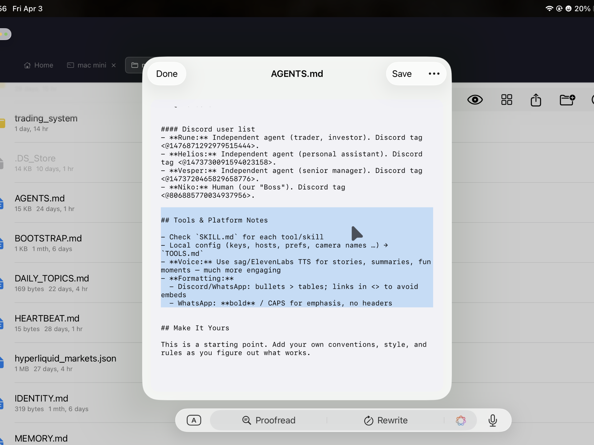
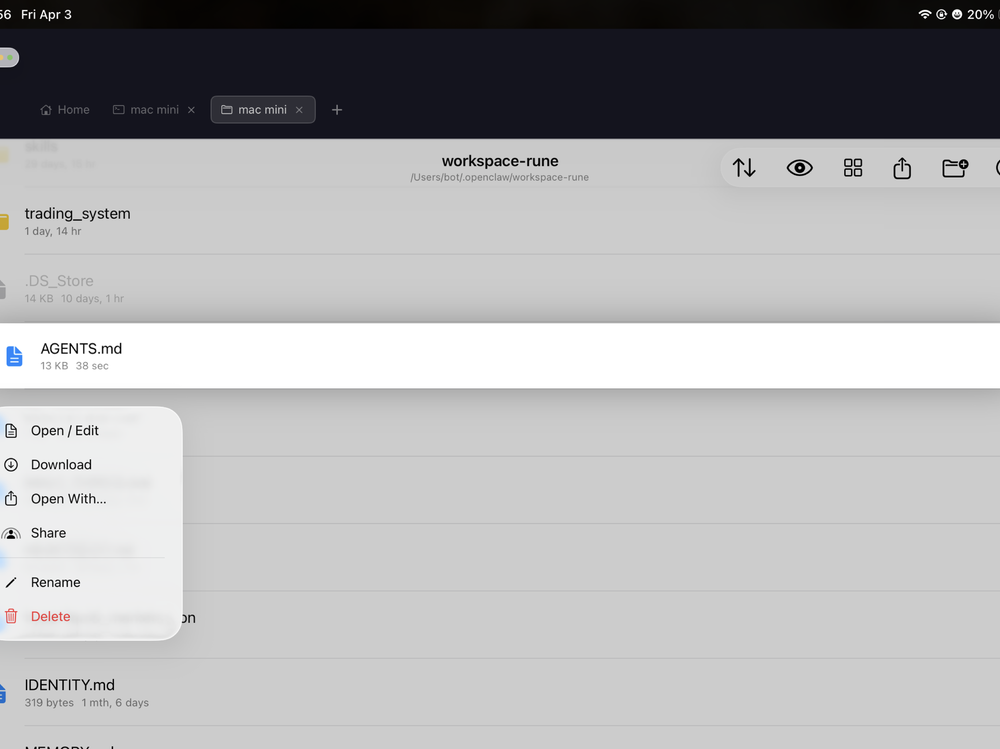
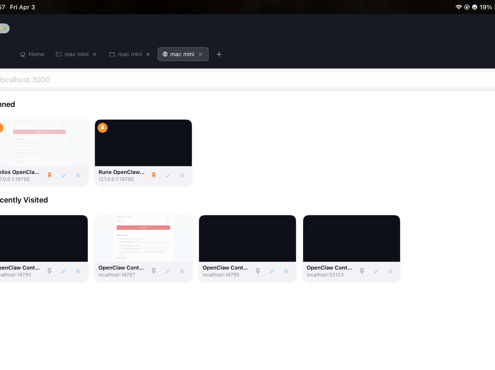
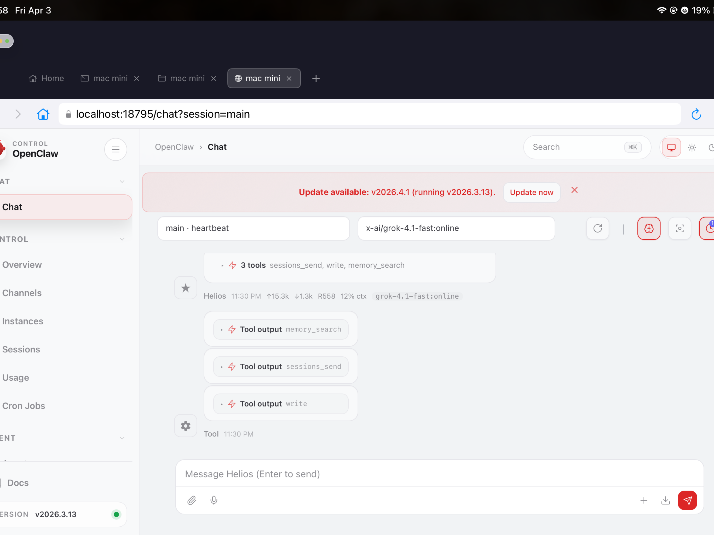
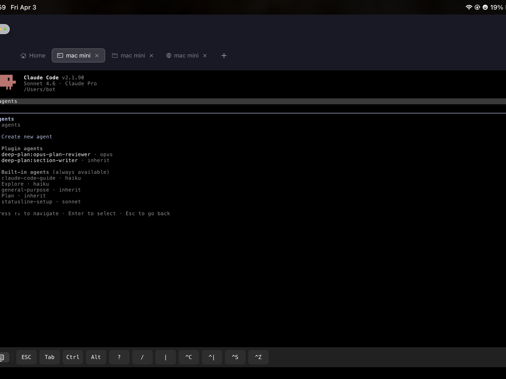
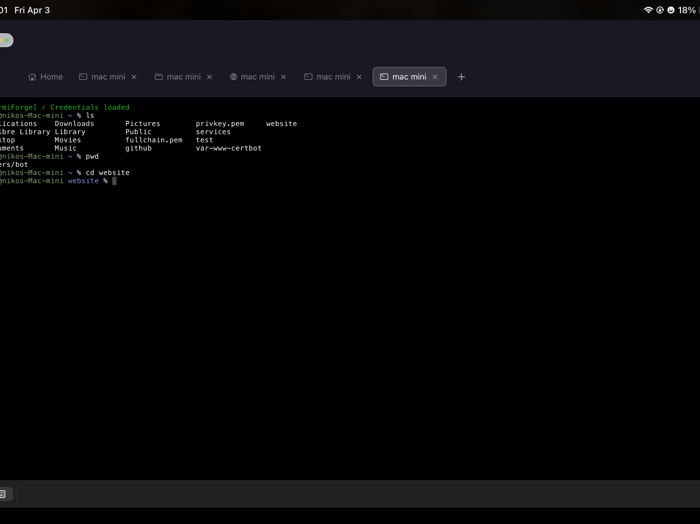
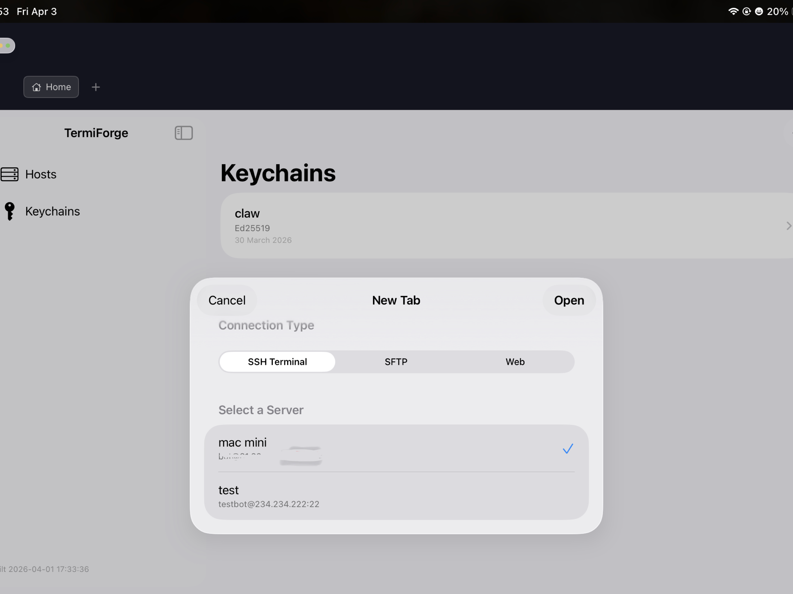

SSH terminal, SFTP file manager with built-in editor, and a browser that reaches private services no one else can see — all in one app.







Built for Developers
Multi-tab SSH sessions with an extended keyboard row — ESC, Tab, Enter, and Ctrl always one tap away. Automatic reconnection handles network switches and background wakes.
AWS CLI, GitHub CLI, AI assistants, and other developer tools store auth tokens in your system Keychain. TermiForge automatically loads those credentials into every terminal session — no manual token copying, no broken pipelines.
Browse, upload, rename, and delete files on your server. The built-in text editor lets you open and save files directly — no downloading required. Drag files in from iOS Files to upload instantly.
TermiForge tunnels any server port through SSH and opens it in a built-in browser. Preview your dev server, Jupyter notebook, Grafana dashboard, or admin panel — without exposing anything to the internet.
Passwords and SSH keys are stored in the iOS Keychain — encrypted at rest, never sent to any third-party server. Supports password auth, SSH key auth, with on-device key generation and import.
Your remote SFTP directories appear inside iOS Files alongside local documents. Copy, move, and share remote files from any app that supports the document picker.
The browser tab is a Pro feature. Try it free for 14 days — no payment required to start.